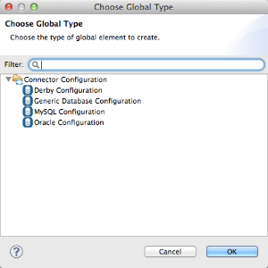
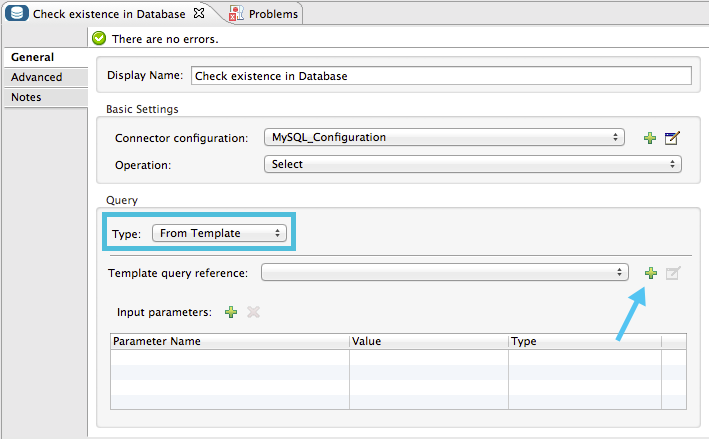
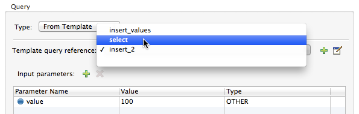

Database Connector
The Database connector allows you to connect with almost any Java Database Connectivity (JDBC) relational database using a single interface for every case. The Database connector allows you to run diverse SQL operations on your database, including Select, Insert, Update, Delete, and even Stored Procedures.
Notes:
-
In Mule 3.7 and newer, you can specify MEL expressions in connector fields. Additional attributes can be configured dynamically depending on the database configuration you use. For more information, see the Fields That Support MEL Expressions section.
-
The Database connector replaces the JDBC connector. As of Mule 3.5.0, the JDBC connector is deprecated.
-
Starting in Mule 3.7, database connector configurations enable the dynamic configuration of some of their connection attributes. This feature enables an application to support multi-tenant scenarios using the same configuration element, and changing the connection attributes based on, for example, information coming from each request.
The Database connector lets you perform predefined queries as well as queries that take the connector’s input to specify variable parameters or even to construct sections of the query dynamically. The Database connector also allows the use of template queries that are both self sufficient and customizable. You can also perform multiple SQL requests in a single bulk update. The connector also allows you to perform Data Definition Language (DDL) requests, that alter the data structure rather than the data itself. The Database connector is available with both Mule Community and Mule Enterprise runtimes.
Prerequisites
This document assumes that you are familiar with databases in general and with SQL syntax. Furthermore, to complete the examples presented here, we assume that you have access to the database that you are to connect to, and that you have downloaded the proper database driver for your database.
Basic Anatomy
To use a Database connector in your Mule application:
-
Check that your database engine corresponds to what is described in Database Engines Supported Out of the Box; if it is not, then add the database driver for your database engine.
-
Configure a Database Global Element where you define:
-
Your database’s location and connection details
-
Whether DataSense is enabled
-
Advanced connection parameters such as connection pooling
-
-
Configure the Database connector element that you embed in your Mule flow, which:
-
Contains the query to perform on the database
-
References the Database Global Element
-
However, to really take advantage of the design-time power of the connector, consider using it in conjunction with the following Mule features:
-
DataSense: When enabled, DataSense uses information in the query statement (configured within the Database connector) to automatically extract metadata about the message your application must deliver to, or can expect from, the database. By enabling this functionality (in the Global Database connector element), Mule does the heavy lifting of discovering the type of data you must send to, or be prepared to receive from the database. For more information, see DataSense.
-
DataMapper: When used in conjunction with a DataSense-enabled Database connector, DataMapper can automatically extract message metadata that you can use to visually map and/or transform to a different data format or structure. For example, if you configure a Database connector in your application, then drop a DataMapper after it, the DataMapper uses the information that DataSense extracted to pre-populate the input values for mapping, so that you only need to confirm (or adjust) the selections, then proceed to mapping to your desired output. In other words, DataSense makes sure that DataMapper knows the data format and structure with which it must work so you don’t have to figure it out manually. For more information, see DataMapper Concepts
-
DataWeave: Replacement for DataMapper. When used in conjunction with a DataSense-enabled Database connector, DataWeave can extract message metadata and transform to a different data format or structure. For more information, see DataWeave.
Supported Operations
The database connector supports the following operations:
-
Select
-
Insert
-
Update
-
Delete
-
Stored Procedure
-
Bulk Execute
-
DDL operations such as CREATE, ALTER, etc.
Additionally, you can run a TRUNCATE query on the database by selecting Update as the operation.
Fields That Support MEL Expressions
In Mule version 3.7 and newer, the following connector fields support MEL expressions. For a usage example, see Example MEL Expression Database URL.
| Generic | Derby | Oracle | MySQL |
|---|---|---|---|
url |
user |
user |
user |
driverClassName |
password |
password |
password |
Properties inside connection-properties element |
url |
host |
database |
- |
driverClassName |
instance |
host |
- |
Properties inside connection-properties element |
url |
url |
- |
- |
driverClassName |
driverClassName |
- |
- |
Properties inside connection-properties element |
Properties inside connection-properties element |
Configuring a Database Connector
The example below illustrates a very simple Mule application in Studio that meets the minimum configuration requirements: configured Database connector, configured Global Database connector, and installed database driver. Of course, the only one of these three required parts that is visible in the graphical representation of the application is the Database connector itself.

To prepare an application to use a Database connector as in the example above, you must first add the database’s driver to your Mule project, then configure, at minimum, the required parameters for the Database connector element and a Global Database connector element. The diagram and section below describe how to address these requirements.
Database Engines Supported Out of the Box
The database connector currently includes out of the box support for three database engines:
-
Oracle
-
MySQL
-
Derby
All other database engines including MS SQL are supported by the Generic Database Configuration option.
|
Note that the steps below differ depending on if you’re trying to connect to one of the DB’s supported out of the box or not, follow only those that correspond to your use case. |
When using the Generic Database Configuration, you manually import the driver for your database engine and specify the driver class as one of the connection parameters. This allows you to use the database connector with any database engine for which you have a driver.
For details on configuring the database connector for any of the above scenarios, see the sections below.
Adding the Database Driver For Database Engines Supported Out of the Box
For database engines supported out of the box, the easiest way to add the database driver is to use the Add File button in the global element configuration window. The following is a brief summary of the steps required to create a global database connector and add the driver. For full configuration details including connection parameters and advanced settings, see Configuring the Global Database Connector for Database Engines Supported Out of the Box below.
To add the database driver for a database engine supported out of the box:
-
Ensure that you have downloaded the database driver and that it is available on your machine.
-
Drag a Database building block from the Studio palette onto the canvas.
-
Click the Database building block to open its properties editing window.
-
Click the green plus icon to the right of Connector configuration to create a database global element for this database connector:

-
Studio displays the Choose Global Type window, shown below. Select your supported database engine from the list, for example Oracle.
 -
Studio displays the Global Element Properties window, shown below. At the bottom of the window you find the Required dependencies section. Click Add File to add the
.jarfile for your database driver.
-
Browse to and select the
.jarfile for your database driver. The driver is automatically added to the project.Should you need to modify the driver after installation (for example when upgrading the driver version) you can use the same configuration window. The Add File button is replaced by a Modify button (as shown below with an installed MySQL driver). Clicking Modify allows you to edit the Java build path for the project.

Configuring the Global Database Connector for Database Engines Supported Out of the Box
Currently, the following database engines are supported out of the box:
-
Oracle
-
MySQL
-
Derby
This section explains how to configure a database connector for use with any of these databases.
Studio Visual Editor
Required: The following table describes the attributes of the Global Database connector element that you must configure to be able to connect, then submit queries to a database. For a full list of elements, attributes, and default values, see Database Connector Reference. See also Fields That Support MEL Expressions.
Oracle
| Attribute, Required | Use |
|---|---|
Name |
Use to define a unique identifier for the global Database connector element in your application. |
Host |
Name of host that runs the database. |
Port |
Configures just the port part of the DB URL (and leaves the rest of the default DB URL untouched). |
Database Configuration Parameters OR Configure via spring-bean OR *Database URL * |
Use to define the details needed for your connector to actually connect with your database. When you have completed the configuration, click Test Connection… to confirm that you have established a valid, working connection to your database. |
Required dependencies |
Click Add File to add the database driver to your project. See Adding the Database Driver For Database Engines Supported Out of the Box above for details. |
MySQL

| Attribute, Required | Use |
|---|---|
Name |
Use to define a unique identifier for the global Database connector element in your application. |
Database Configuration Parameters OR Configure via spring-bean OR Database URL |
Use to define the details needed for your connector to actually connect with your database. When you have completed the configuration, click Test Connection to confirm that you have established a valid, working connection to your database. |
Required dependencies |
Click Add File to add the database driver to your project. See Adding the Database Driver For Database Engines Supported Out of the Box above for details. |
Derby

| Attribute, Required | Use |
|---|---|
Name |
Use to define a unique identifier for the global Database connector element in your application. |
Database Configuration Parameters OR Configure via spring-bean OR Database URL |
Use to define the details needed for your connector to actually connect with your database. When you have completed the configuration, click Test Connection to confirm that you have established a valid, working connection to your database. |
General Tab
This section and the next describe the attributes of the element that you can optionally configure to customize some functionality of the Global Database Connector. For a full list of elements, attributes and default values, consult the Database Connector Reference. See also Fields That Support MEL Expressions.
Enable DataSense - Use to "turn on" DataSense, which enables Mule to make use of message metadata during design time.

Advanced Tab

| Attribute, Optional | Use |
|---|---|
Use XA Transactions |
Enable to indicate that the created datasource must support extended architecture (XA) transactions. |
Connection Timeout |
Maximum time in seconds that this data source will wait while attempting to connect to a database. A value of zero specifies that the timeout is the default system timeout if there is one; otherwise, it specifies that there is no timeout. |
Transaction isolation |
Define database read issue levels. |
Driver Class Name |
The fully qualified name of the database driver class. |
Advanced Parameters |
Send parameters as key-value pairs to your DB. The parameters that can be set depend on what database software you are connecting to. |
Connection Pooling |
Define values for any of the connection pooling attributes to customize how your Database Connector reuses connections to the database. You can define values for:
|
XML Editor
DB Config <db:generic-config>
| Attribute | Use |
|---|---|
name |
Use to define unique identifier for the global Database Connector element in your application. |
database host password port user |
Use to define the details needed for your connector to actually connect with your database. When you have completed the configuration, click Test Connection… to confirm that you have established a valid, working connection to your database. See also Fields That Support MEL Expressions. |
useXaTransactions |
Enable to indicate that the created datasource must support extended architecture (XA) transactions. |
Pooling Profile <db:pooling-profile />
| Attribute | Use |
|---|---|
driverClassName |
The fully qualified name of the database driver class. |
maxPoolSize minPoolSize acquireIncrement preparedStatementCacheSize maxWaitMillis |
Define values for any of the connection pooling attributes to customize how your Database Connector reuses connections to the database. You can define values for:
|
Connection Properties <db:connection-properties>
| Attribute | Use |
|---|---|
Advanced Parameters |
Send parameters as key-value pairs to your database. The parameters that can be set depend on what database software you are connecting to. Each parameter must be included in a separate tag, enclosed by connection properties like so: |
Database Engines Not Supported Out of the Box - Generic Installation
All databases that are not configured Database Engines Supported Out of the Box must be added through the generic database installation, and then configured accordingly.
Adding the Database Driver for Generic DB Configuration
To install the database driver for a generic installation, follow the steps below.
Studio Visual Editor
-
If you haven’t already done so, download the driver for your particular database. For example, the driver for a MySQL database is available at download Connector/j online.
-
Drag and drop the driver’s .
jarfile from your local drive to therootfolder in your project. -
Add the
.jarfile to the build path of your project. Right click the project name, then select Build Path > Configure Build Path -
In the wizard that appears, click the Libraries tab, then click Add Jars
-
Navigate to the
rootfolder in your project, then select the.jarfile for your database driver. -
Click OK to save, then OK to exit the wizard. Notice that your project now has a new folder named Referenced Libraries in which your database driver
.jarresides.
XML Editor or Standalone
-
If you haven’t already done so, download the driver for your particular database. For example, the driver for a MySQL database is available for download online.
-
Add the driver’s
.jarfile to therootfolder in your project. In Studio, you can drag and drop the file from your local drive into the project folder. -
Add the
.jarfile to the build path of your project.
After adding the database driver for a database engine not supported out of the box, you need to enter the fully qualified name of the driver class in the global element referenced by the database connector. For details, see the next section.
Configuring the Global Database Connector for Generic DB Configuration
Studio Visual Editor
Required: The following table describes the attributes of the Global Database Connector element that you must configure in order to be able to connect, then submit queries to a database. For a full list of elements, attributes and default values, consult the Database Connector Reference. See also Fields That Support MEL Expressions.
Generic Database Configuration

| Attribute, Required | Use |
|---|---|
Name |
Use to define unique identifier for the global Database Connector element in your application. |
Configure via spring-bean |
Optional. Configure this database connection by the Spring bean referenced in DataSource Reference. Mutually exclusive with Database URL. |
Database URL |
Optional (can also be configured with Configure via spring-bean). The URL for the database connection. Mutually exclusive with Configure via spring-bean. |
Driver Class Name |
Fully-qualified driver class name of the driver for your database, which must be already imported into your project. (For details on importing the driver, see Adding the Database Driver For Database Engines Supported Out of the Box above.) You can enter the full name in the empty field or click … to browse the available driver classes. When browsing the available driver classes, type the beginning of the driver class name (which you can check by clicking the driver file under Referenced Libraries in the Package Explorer). Studio displays the list of classes provided by the driver. For a list of driver classes of commonly-used database engines, see link:#Common-Driver-Class-Specifications[Common Driver Class Specifications. |
Optional: The following table describes the attributes of the element that you can optionally configure to customize some functionality of the Global Database Connector. For a full list of elements, attributes and default values, consult the Database Connector Reference. See also Fields That Support MEL Expressions.
General tab
| Attribute, Optional | Use |
|---|---|
Enable DataSense |
Use to "turn on" DataSense, which enables Mule to make use of message metadata during design time. Default: |
Advanced tab
| Attribute, Optional | Use |
|---|---|
Advanced Parameters |
Send parameters as key-value pairs to your DB. The parameters that can be set depend on what database software you are connecting to. |
Connection Timeout |
Define the amount of time a database connection remains securely active during a period of non-usage before timing-out and demanding logging in again. |
Connection Pooling |
Define values for any of the connection pooling attributes to customize how your database connector reuses connections to the database. You can define values for:
|
Use XA Transactions |
Enable to indicate that the created datasource must support extended architecture (XA) transactions. Default: |
XML Editor
| Attribute | Use |
|---|---|
DB Config |
|
name |
Use to define a unique identifier for the global Database Connector element in your application. |
database host password port user |
Use to define the details needed for your connector to actually connect with your database. When you have completed the configuration, click Test Connection… to confirm that you have established a valid, working connection to your database. See also Fields That Support MEL Expressions. |
useXaTransactions |
Enable to indicate that the created datasource must support XA transactions. |
| Attribute | Use |
|---|---|
Pooling Profile `<db:pooling-profile `/> |
|
driverClassName |
The fully qualified name of the database driver class. |
maxPoolSize minPoolSize acquireIncrement preparedStatementCacheSize maxWaitMillis |
Define values for any of the connection pooling attributes to customize how your database connector reuses connections to the database. You can define values for:
|
Connection Properties |
|
Advanced Parameters |
Send parameters as key-value pairs to your database. The parameters that can be set depend on what database software you are connecting to. Each parameter must be included in a separate tag, enclosed by connection properties like so: |
Common Driver Class Specifications
When you configure a global element for a generic database server, you need to enter the fully qualified name of the driver class as explained in the Driver Class Name cell in the table above. Below are the driver class names provided by some of the most common database drivers.
| Database | Driver Version | Driver Class Name |
|---|---|---|
PostgreSQL |
|
|
MS-SQL |
|
|
Configuring a Database Connector Instance Inside a Flow
Required: The following table describes the attributes of the Database Connector element that you must configure in order to be able to connect, then submit queries to a database. For a full list of elements, attributes, and default values, consult the Database Connector Reference. See also Fields That Support MEL Expressions.
|
The Oracle and Derby databases are supported by Mule, but you can only configure them correctly using Studio’s XML Editor, not using Studio’s Visual Editor. |
| Attribute, Required | Use | ||
|---|---|---|---|
Display Name |
Use to define a unique identifier for the Database Connector element in your flow. |
||
Config Reference |
Use to identify the Global Database Connector element to which the Database Connector refers for connection details, among other things. |
||
Operation |
Use to instruct the Database Connector to submit a request to perform a specific query in the database:
|
||
SQL Statement OR Template Query Reference |
If you chose to use a Parameterized or Dynamic query type, use this attribute to define the SQL statement itself. If you chose to use a From Template query type, use this attribute to reference the template (defined in a global Template Query element) in which you defined a SQL statement. Refer to Configuring a From Template Query below for more details. |
Examples:

Optional: The following table describes the attributes of the element that you can optionally configure to customize some functionality of the Database Connector. For a full list of elements, attributes and default values, consult the Database Connector Reference.
|
Take advantage of Bulk Mode Enable this optional feature to submit collections of data with one query, as opposed to executing one query for every parameter set in a collection. Enabling bulk mode improves the performance of your applications as it reduces the number of individual query executions your application triggers. Bulk mode requires a parameterized query with at least one parameter, or a dynamic query with at least one expression. See configuration details below. |
General Tab
Parameterized Stored Procedure Fields
The following are optional attributes:
-
Parameter Name - Use to identify a named parameter in your SQL statement for which you wish to use the value at runtime, when your application submits your query which calls upon stored in the database instance.
-
Parameter Type - Use to identify the type of data the stored procedure can expect to receive from your query statement.
-
IN/OUT - Defines the behavior of your stored procedure:
-
IN - Stored procedure that can expect only to receive data
-
OUT - Stored procedure that can expect only to return data
-
INOUT - Stored procedure that can expect to receive, then return data
-
-
Value - Parameterized Stored Procedure. Use to define the value that overrides the default value for the named parameter in your SQL statement when your application submits your query.

Bulk Execute Parameters
-
Query Text - Type several statements (separated by a semicolon and a new line character) to perform them in bulk. Supports all operations except
SelectandStored procedure. -
From File - Reference a file with several statements (separated by a semicolon and a new line character) to perform them in bulk. Supports all operations except
SelectandStored procedure.


Advanced Tab
The following are optional attributes.
All fields on the Advanced tab use these operations:
Operation = Insert
Operation = Select
Fields to Use With All Operations
-
Target - Use with: All. Use an enricher expression to enrich the message with the result of the SQL processing. Use this attribute to specify an alternate source for the output data, such as a variable or property.
-
Source - Use this expression to obtain the value for calculating the parameters. By default, this is
#[payload] -
Transactional Action |ALL |Use this attribute to change the default to one of the following values:
-
JOIN_IF_POSSIBLE - (Default) joins an in-flight transaction; if no transaction exists, Mule creates a transaction.
-
ALWAYS_JOIN - always expects a transaction to be in progress; if it cannot find a transaction to join, it throws an exception.
-
NOT_SUPPORTED - executes outside any existent transaction.
-
Select and Stored Procedure Fields
-
Max Rows - Use to define the maximum number of rows your application accepts in a response from a database.
-
Fetch Size - Indicates how many rows should be fetched from the resultSet. This property is required when streaming is true, the default value is 10.
-
Streaming - Enable to facilitate streaming content through the Database Connector to the database. Mule reads data from the database in chunks of records instead of loading the full result set into memory.
Insert, Update, and Delete Fields
-
Bulk Mode - Enable to submit collections of data with one query, as opposed to executing one query for every parameter set in a collection. Enabling bulk mode improves the performance of your applications as it reduces the number of individual query executions.
Bulk mode requires a parameterized query with at least one parameter.
If you set bulk mode without a parameterized query it won’t result in a single query in bulk mode, but rather numerous single queries, which has a much lower performance. For example, imagine you have a query which is designed to insert employees into a database table, and for each employee, it must insert a last name and an ID. If the Database Connector submitted one query for each one of 1000 employees, the operation would be very time consuming and non-performant. If you enable bulk mode, the Database Connector executes one query to the database to insert all the employees' values as a list of parameter sets of last names and IDs.
Insert Fields
-
Auto-generated Keys - Use this attribute to indicate that auto-generated keys should be made available for retrieval.
-
Auto-generated Keys Column Indexes - Provide a comma-separated list of column indexes that indicates which auto-generated keys should be made available for retrieval.
-
Auto-generated Keys Column Names - Provide a comma-separated list of column names that indicates which auto-generated keys should be made available for retrieval.
Query Types
Mule makes available three types of queries you can use to execute queries to your database from within an application. The following table describes the three types of queries, and the advantages of using each.
| Query Type/Description | Advantages |
|---|---|
Parameterized (Recommended) - Mule replaces all Mule Expression Language (MEL) expressions inside a query with "?" to create a prepared statement, then evaluates the MEL expressions using the current event so as to obtain the value for each parameter. Refer to the Tips section for tips on writing parameterized query statements. |
Relative to dynamic queries, parameterized queries offer the following advantages:
|
Dynamic - Mule replaces all MEL expressions in the query with the result of the expression evaluation, then sends the result to the database. As such, you are responsible for making sure that any string in your query statement is interpretable by the database (such as quoting strings, data formatting, etc.) The most important disadvantage of using dynamic query statements is security as it leaves the statement open for SQL injection, potentially compromising the data in your database. This risk can be mitigated by for example adding filters on your flow before the DB connector. |
Relative to parameterized queries, dynamic queries offer the following advantages:
|
From Template - Enables you to define a query statement once, in a global element in your application (global Template Query Reference element), then reuse the query multiple times within the same application, dynamically varying specific values as needed. |
Relative to parameterized and dynamic queries, from template queries offer the advantage of enabling you to reuse your query statements. For example, you can define a parameter in your query statement within the template (within the global Template Query Reference element), then, using the query statement in a Database Connector in your flow, instruct Mule to replace the value of the parameter with a value defined within the Database Connector. Read more about how to configure this query type below. |
Configuring a Query From a Template
You can use a template to pre-define an SQL query that you can use and reuse in your application’s flows. This SQL query may contain variable parameters, whose values are inherited from database connector elements that you specify. An SQL template can contain a parameterized or a dynamic SQL query.
To utilize the From Template query type, you must first define the template as a global element, then reference the template from within the database connector in your flow.
The following steps describe how to configure your database connector to use a query statement from a template.
Studio Visual Editor
-
From within the Properties Editor of the Database Connector element in your flow, use the drop-down next to Type to select
From Template. -
Click the plus sign next to the Template Query Reference field to create a new Global Template Query Reference element (see image, below).
 -
Studio displays the Global Element Properties panel, shown below. Provide a Name for your global element, then select a query type, either
ParameterizedorDynamic.
-
Use the radio buttons to choose the method by which you wish to define the query statement: define it inline, or define from a file.
-
Write your SQL query, which can optionally include variables. If you include a variable, reference it by prepending its name with a colon (:) as in
:myvar. -
Use the plus sign next to Input Parameters to create the variable, assign its default value and optionally select the data type.
-
Click OK to save your template and return to the Properties Editor of the Database Connector in your flow. Studio auto-populates the value of the Template Query Reference field with the name of the global template element you just created.
-
You can optionally add variables and values to the Input Parameters section of the database connector. These variables and their values are valid for all SQL templates. If a variable has been defined here and also in an individual template, then the value specified here takes precedence. In the image below, the variable
valuehas a value of100. This value is valid for any defined templates (which you can see in the drop-down menu) that reference the variable. -
Click the blank space in the Studio canvas to save your changes.
Example of Parameterized Query Using Variables

In the image above, the parameterized query inserts the values referenced by variables :ename, :hdate and :dept. The names and values of these variables are set in the Input parameters section below the SQL query. Note that MEL expressions are allowed as values, as in the case of the :hdate field, which retrieves a date stored in a flow variable.
For each variable, the database connector automatically determines and sets the data type for inserting into the database; however, if type resolution fails, you can manually select the data type by clicking in the Type row for the variable. Studio displays a drop-down menu with data types, as shown below.

If the desired data type is not listed, simply type it into the empty field.
XML Editor or Standalone
-
At the top of your project’s XML config file, above all flows, add a
db:template-queryelement. Configure the attributes of the element according to the code sample below. -
To the
db:template-queryelement, add one of the following child elements, according to the type of query you wish to write:db:parameterized-queryordb:dynamic-query. Configure the attribute of the child element in order to define your SQL statement. The statement may include named variables whose values can be dynamically replaced by values defined in individual Database Connector elements. To create a named variable, prepend your desired variable name with a colon (:). For example, to create a named variable forID, use:idin the query statement of your template. Use thedb:in-paramchild element to define a default value of your named variable, if you wish.<db:template-query name="Template_Query" doc:name="Template Query"> <db:parameterized-query><![CDATA[insert into simpleemp values (id)]]></db:parameterized-query> <db:in-param name="id" defaultValue="2"/> </db:template-query> -
In the Database connector in your Mule flow, define the values for the variables in your query statement that Mule should use at runtime when executing the query from the template. In other words, define the values you want to use to replace the default value for any variable that you defined within your template query statement.
Input Parameter Attributes
Child element: db:in-param
| Attribute | Description |
|---|---|
|
Name for the input parameter |
|
Input parameter default value |
|
Input parameter data type |
Example of Parameterized Query Using Variables
<db:template-query name="insert_values" doc:name="Template Query">
<db:parameterized-query><![CDATA[INSERT INTO register("employer_name", "hire_date", "dept") VALUES(:ename,:hdate,:dept);]]></db:parameterized-query>
<db:in-param name="ename" defaultValue="Genco Pura Olive Oil"/>
<db:in-param name="hdate" defaultValue="#[flowVar['tdate']]"/>
<db:in-param name="dept" defaultValue="PR"/>
</db:template-query>In the code above, the parameterized query inserts the values referenced by variables for employer name :ename, hire date :hdate and :dept. The names and values of these variables are defined by in-param child elements. Note that MEL expressions are allowed as values, as in the case of the :hdate field, which retrieves a date stored in a flow variable.
For each variable, the database connector automatically determines and sets the data type for inserting into the database; however, you can also manually define the data type by using the type attribute as shown below.
...
<db:in-param name="value" defaultValue="#[flowVar['price']]" type="MONEY"/>
...Execute DDL
Data Definition Language (DDL) is a subset of SQL that serves for manipulating the data structure rather than the data itself. This kind of request is used to create, alter, or drop tables.
|
When using DDL, you can only make dynamic queries (which may or may not have MEL expressions). The following are not supported:
|
Examples
Studio Visual Editor
Example 1

Example 2
XML Editor
Example 1
<db:execute-ddl config-ref="myDb">
<db:dynamic-query>
truncate table #[tablename]
</db:dynamic-query>
</db:execute-ddl>Example 2
<db:execute-ddl config-ref="myDb">
<db:dynamic-query>
CREATE TABLE emp (
empno INT PRIMARY KEY,
ename VARCHAR(10),
job VARCHAR(9),
mgr INT NULL,
hiredate DATETIME,
sal NUMERIC(7,2),
comm NUMERIC(7,2) NULL,
dept INT)
</db:dynamic-query>
</db:execute-ddl>Bulk Updates
The Database Connector can run multiple SQL statements in bulk mode. The return type of this kind of request is an update count, not actual data from the database.
The individual SQL statements within this MP must be separated by semicolons, and line break characters. All queries must be dynamic, they may or may not include MEL expressions.
Instead of writing a statement directly, you can reference a file that contains multiple statements that are separated by semicolons and line breaks.
|
You cannot perform |
Examples
Studio Visual Editor
Example 1

Example 2

XML Editor
Example 1
<db:bulk-execute config-ref="myDb">
insert into employees columns (ID, name) values (abc, #[some expression]);
update employees set name = "Pablo" where id = 1; delete from employees where id = 2;
</db:bulk-execute>Example 2
<db:bulk-execute config-ref="dbConfig" source="#[bulkQuery]">
#[payload]
</db:bulk-execute>Tips
-
Installing the database driver: Be sure to install the
.jarfile for your database driver in your Mule project, then configure the build path of the project to include the.jaras a referenced library. -
Inserting data drawn from a SaaS provider into a database: Within your query statement, be sure to prepend input values with a "?" to ensure that a query can return NULL values for empty fields instead of returning an error. For example, the query statement below uses information pulled from Salesforce fields BillingCity, BillingCountry, OwnerId, and Phone to populate a table in a database. If the value of any of those fields is blank in Salesforce, such an insert statement would return an error.
insert into accounts values (#[message.payload.BillingCity], #[message.payload.BillingCountry], #[message.payload.OwnerId], #[message.payload.Phone])
However, if you manipulate the statement to include "?"s, then the insert statement succeeds, simply inserting NULL into the database table wherever the value of the Salesforce field was blank.
insert into accounts values (#[message.payload.?BillingCity], #[message.payload.?BillingCountry], #[message.payload.?OwnerId], #[message.payload.?Phone])
-
Automatically adding a parameter for MySQL Database connections: In this release of Mule, be aware that the Global Database Connector for MySQL automatically adds a parameter to the connection details to facilitate DataSense’s ability to extract information about the data structure and format. The parameter is:
generateSimpleParameterMetadata = trueThis driver returns “string” as the type for each input parameter (such as could not be the real parameter type). -
Avoiding complex MEL expressions in SQL statements: Because DataSense infers data structure based upon the query statement in a Database Connector, avoid using complex MEL expressions in the query statement, such as MEL expressions that involve functions. DataSense is only able to detect data structure from simple MEL expressions such as
[payload.BillingCity], not[payload.get(0)]. If the latter, DataSense can only indicate to DataMapper that the structure of the data it is to receive or send is "unknown". -
Enclosing named variables in quotes. Variables in parameterized query statements should not be enclosed in quotes. For example, a user should specify:
select * from emp where id = #[payload.id]Not:
select * from emp where id = '#[payload.id]' -
Streaming with the Database connector: When you enable streaming on your Database connector, you leave the connection, statement, and result set open after execution. Mule closes these resources when either of the following occurs:
-
The result iterator is consumed.
-
There is an exception during the processing of the message (when the result iterator is in the payload of the current message).
-
JDBC Data Types
In Mule 3.6 and newer, you can use JDBC data types with the Database connector. This feature provides the ability to use array and struct types in a query, as well as results of stored procedures, and allows you to reference these types from result sets.
To use a JDBC data type, define the type in the database configuration with the type ID corresponding to the structured data type, for example:
<db:oracle-config name="dbConfig" url="..." user="..." password="...">
<db:data-types>
<!-- java.sql.STRUCT == 2002>
<db:data-type name="CONTACT_DETAILS" id="2002"/>
<!-- java.sql.ARRAY == 2003>
<db:data-type name="CONTACT_DETAILS_ARRAY" id="2003"/>
</db:data-types>
</db:oracle-config>Struct Type
In the case of struct values, the database connector returns java.sql.Struct. In order to obtain the information, invoke the getAttributes method of this Java type.
Array Type
For array values, the connector returns java.sql.Array. In order to obtain the corresponding Java array, invoke the getArray method on the java.sql.Array instance. This requires an open connection to the database, which means that the query returning the array must be executed inside a transactional scope or using streaming.
| The value returned in a result field can be used as an input value in a another query. |
Passing User-Defined Data Types to Stored Procedure
To pass a user-defined data type to a stored procedure, the data type should be specified in the database configuration with a number id identifying the JDBC type it conforms to. The parameter you pass to the stored procedure should be referenced by the name of the data type:
<db:oracle-config name="Oracle_Configuration" url="jdbc:oracle:thin:@54.175.245.218:1581:xe" user="user" password="4321" >
</db:oracle-config>
<db:data-type name="INtypename" id="12"/>
<!-- VARCHAR id=12 -->
<db:data-type name="OUTtypename" id="2002"/>
<!-- STRUCT id=2002 -->
</db:data-types>
...
<db:stored-procedure config-ref="Generic_Database_Configuration" doc:name="Database">
<db:parameterized-query><![CDATA[CALL storedprocfnc(:INtypename,:OUTtypename);]]></db:parameterized-query>
<db:in-param name="INtypename" value="#[payload]"/>
<db:out-param name="OUTtypename" />
</db:stored-procedure>Example MEL Expression Database URL
The following example shows the Mule 3.7 and newer change where you can specify a MEL expression in the Database URL field. See also Fields That Support MEL Expressions.
<mule xmlns="http://www.mulesoft.org/schema/mule/core"
xmlns:xsi="http://www.w3.org/2001/XMLSchema-instance"
xmlns:db="http://www.mulesoft.org/schema/mule/db"
xsi:schemaLocation="http://www.mulesoft.org/schema/mule/core http://www.mulesoft.org/schema/mule/core/current/mule.xsd
http://www.mulesoft.org/schema/mule/db http://www.mulesoft.org/schema/mule/db/current/mule-db.xsd">
<db:derby-config name="dynamicDbConfig" url="#[dataSourceUrl]" driverClassName="org.apache.derby.jdbc.EmbeddedDriver"/>
<flow name="defaultQueryRequestResponse">
<inbound-endpoint address="vm://testRequestResponse" exchange-pattern="request-response"/>
<set-variable variableName="dataSourceUrl" value="jdbc:derby:muleEmbeddedDB;create=true"/>
<db:select config-ref="dynamicDbConfig">
<db:parameterized-query>select * from PLANET order by ID</db:parameterized-query>
</db:select>
</flow>
</mule>